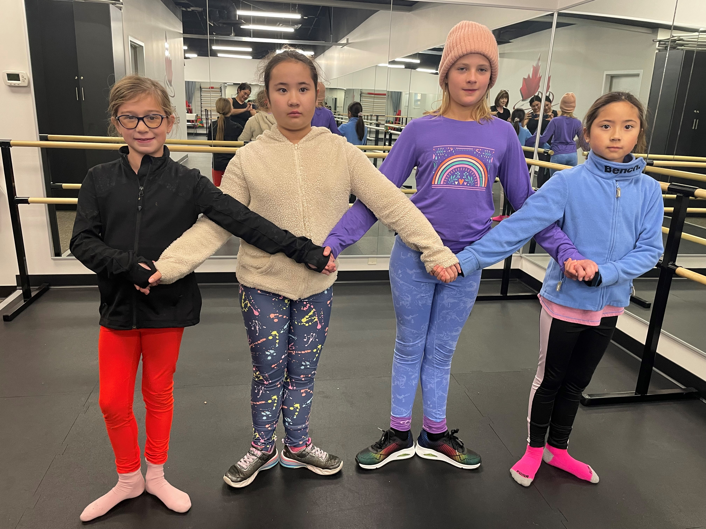
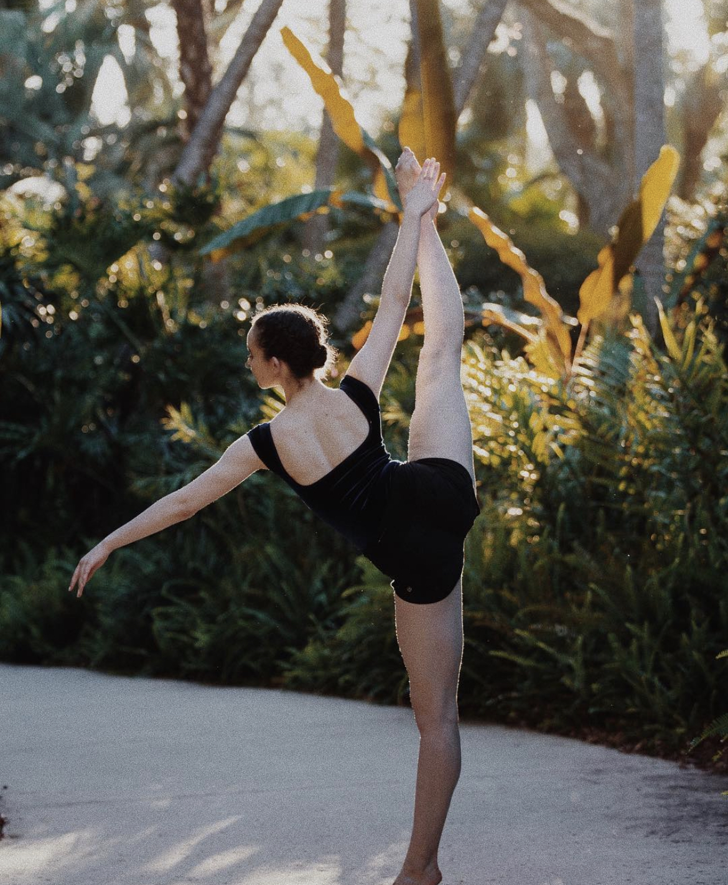
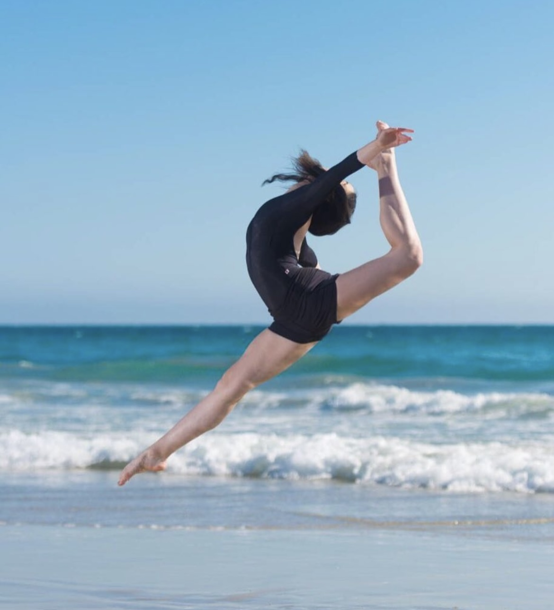

Preschool Dance
We offer 2 types of preschool programs:
Mommy and me (6 week program)
Introduce your toddler to music and movement, while building strength, balance and coordination in this parented class.
Discover dance DANCE (6-week programs available)
Dance to Your Own Tune is The RAD Pre-School Dance Curriculum that develops basic movement skills, musical awareness, expression and creativity.Classes are for 3 and 4 year olds.
Ballet
Ballet - Ages 4 and up. Ballet is an art form created by the movement of the human body. Ballet is a technique of dance that is a discipline Emphasis is placed on lines of the body, precise footwork, and artistically expressive positioning of the arms. We follow the Royal Academy of Dance Ballet syllabus for graded levels
Contemporary
A style of dance that favors movement derived from the expression of inner feelings and rejects the limitations of classical ballet .(Prerequisite: must take ballet )
